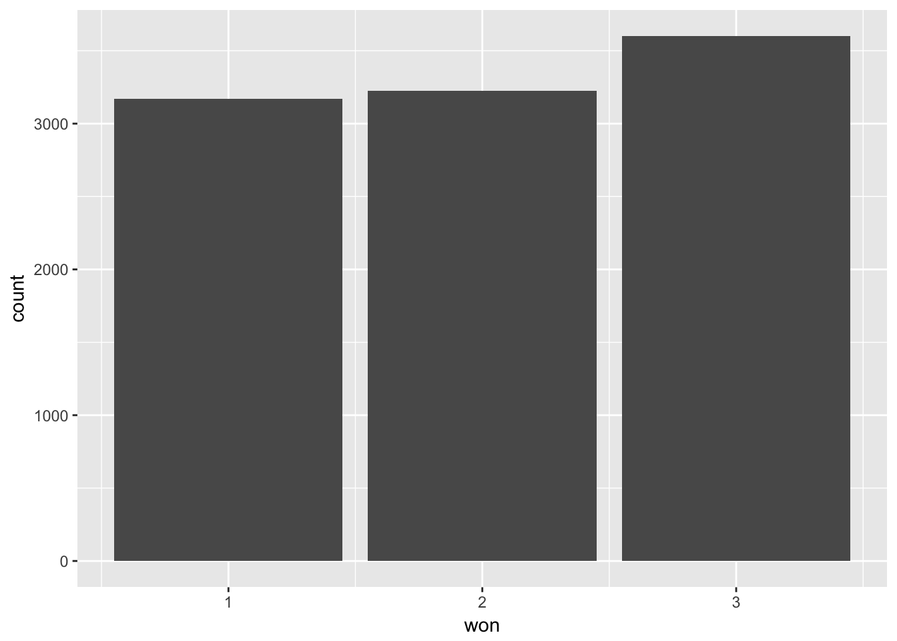
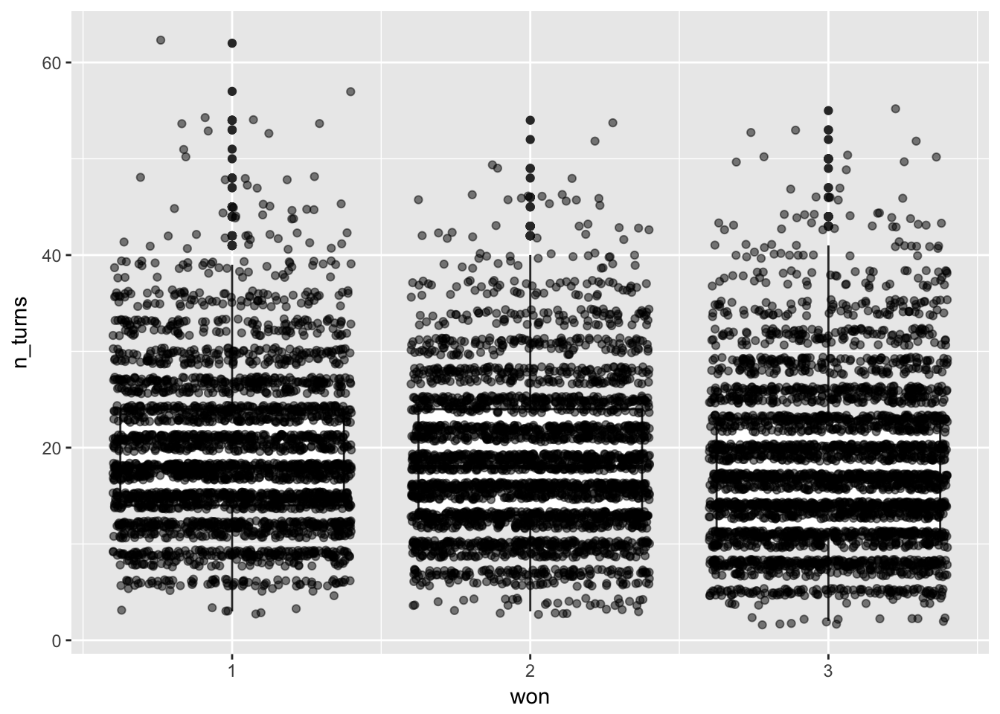

Lately we have been playing the dice game Left Center Right and since it is entirely a game of chance, I figured it wouldn’t hurt to run some simulations to figure out a little bit more about the nature of the game.
For those of you that doesn’t know the game here is a brief explanation:
If a player has fewer than three chips left, he is still in the game but his number of chips is the number of dice he rolls on his turn, rather than rolling all three. When a player has zero chips, he passes the dice on his turn, but may receive chips from others and take his next turn accordingly. The winner is the last player with chips left. He does not roll the dice, and wins the center pot.
So to do the simulations we will split up the game into smaller parts and dedicate a function to each, combining them should be fairly easy and would hopefully ease the readability of the code.
First we need a function to act as the dice, secondly we need a function that takes the resulting dice rolls and moves the chips around accordingly, and lastly we need a function that will play the game till completion. I will also write a function to plot the course of the game, and a function to summarize the game.
The data structure used to keep track of the game states will be a matrix as I found it quite handy to scale to any size.
This project is light on packages as the entire simulation part is done in base R, however, we will analyse the results using tidyverse.
library(tidyverse) Building blocks
Our first goal was to create a function that acts as our special die. This task is rather simple and is mostly done to keep notation down
lcr_dice <- function(n) {
faces <- c("left", "right", "center", "none", "none", "none")
sample(faces, size = n, replace = TRUE)
}1 out of 3 done! Next we need to use the results to change the state of the game. To store the states of the game I have decided to use a n times m matrix, where n is the number of turns, and m in the number of people. Then it is easy for us to create a long matrix and cut it down to size after the game have ended. For the function we will need the following 4 arguments:
turn_action <- function(game, rolls, turn, player) {We want the game matrix, and we will let the function return an updated game matrix in the same style that dplyr::mutate() returns a new data.frame. We need to know what was rolled, what turn it is, and which player is rolling. First we will create the outcome game matrix we will be modifying, along with the information of how many people are playing and some sufficient statistics about the rolls.
new_game <- game
n_people <- NCOL(game)
n_right <- sum(rolls == "right")
n_left <- sum(rolls == "left")
n_moved <- sum(rolls != "none")Next we will copy the last turns state to the current turns state
new_game[turn, ] <- new_game[turn - 1, ]next we will add a chip to the player to the right of the current player for each time “right” was rolled.
new_game[turn, player + 1] <- new_game[turn - 1, player + 1] + n_rightHowever this will fail if it is the last players turn. This can be fixed with a simple if else statement
if(player == n_people) {
new_game[turn, 1] <- new_game[turn - 1, 1] + n_right
} else {
new_game[turn, player + 1] <- new_game[turn - 1, player + 1] + n_right
}that adds chips to the first players total if it is the last players turn. The same approach is done with the “left”. However here the if statement checks if it is the first persons turn.
if(player == 1) {
new_game[turn, n_people] <- new_game[turn - 1, n_people] + n_left
} else {
new_game[turn, player - 1] <- new_game[turn - 1, player - 1] + n_left
}finally the last step is to remove chips from the players turn according to how many that he gave away
new_game[turn, player] <- new_game[turn - 1, player] - n_movedgiving us this full function:
turn_action <- function(game, rolls, turn, player) {
new_game <- game
n_people <- NCOL(game)
n_right <- sum(rolls == "right")
n_left <- sum(rolls == "left")
n_moved <- sum(rolls != "none")
new_game[turn, ] <- new_game[turn - 1, ]
if(player == n_people) {
new_game[turn, 1] <- new_game[turn - 1, 1] + n_right
} else {
new_game[turn, player + 1] <- new_game[turn - 1, player + 1] + n_right
}
if(player == 1) {
new_game[turn, n_people] <- new_game[turn - 1, n_people] + n_left
} else {
new_game[turn, player - 1] <- new_game[turn - 1, player - 1] + n_left
}
new_game[turn, player] <- new_game[turn - 1, player] - n_moved
new_game
}2 out of 3 done! Now we just need function that play the game for us. As before we will start with the arguments of the function
lcr <- function(n_iter = 1000, n_people = 3, n_dice = 3, start_points = 3) {where we have a handful of argument with predetermined starting values. - n_iter is set to 1000 for now to stop overly drawn out games - n_people refers to the number of people playing the game - n_dice while the game is traditionally played with 3 dice, there is nothing stopping us from varying this part of the game too - start_points earlier referred to as chips, is the number of points each person starts with.
To begin we create a vector of whose turn it is.
who_turn <- lag(rep(1:n_people, length.out = n_iter))this is done with a simple rep call, inside a lag since we are going to let the first turn happen at row 2, since we are indexing the previous turn. Next we create the game matrix and give each player the same number of starting points
game <- matrix(ncol = n_people, nrow = n_iter)
game[1, ] <- start_pointsThis works since start_points is being cycled to fit to length. Now we are ready to play the game, we will do this with a simple for loop with an if statement checking to see if the winning condition is meet.
for(i in 2:n_iter) {
rolls <- lcr_dice(min(game[i - 1, who_turn[i]], n_dice))
game <- turn_action(game, rolls, i, player = who_turn[i])
if(sum(game[i, ] != 0) == 1) {
return(game[1:i, ])
}
}the condition sum(game[i, ] != 0) == 1 counts the number of players with non-zero point counts and checks if it is equal to one, meaning the game have ended since one person ended with all the remaining chips. Lastly if the loop ends before the game ends we let the function return the game anyway to insure that the function always terminates.
lcr <- function(n_iter = 1000, n_people = 3, n_dice = 3, start_points = 3) {
who_turn <- lag(rep(1:n_people, length.out = n_iter))
game <- matrix(ncol = n_people, nrow = n_iter)
game[1, ] <- start_points
for(i in 2:n_iter) {
rolls <- lcr_dice(min(game[i - 1, who_turn[i]], n_dice))
game <- turn_action(game, rolls, i, player = who_turn[i])
if(sum(game[i, ] != 0) == 1) {
return(game[1:i, ])
}
}
return(game)
}3 out of 3 done!
Helping functions
to help our analysis of the lcr function did I develop 2 functions to visualize the path, and pull out the summary statistics we want. First we have the plotting function that returns a ggplot object of the game in the form of a color-coordinated line-chart.
lcr_plot <- function(data) {
tibble(points = data %>% t() %>% as.numeric(),
player = rep(1:NCOL(data), length.out = length(data)),
turn = rep(1:NROW(data), each = NCOL(data))) %>%
ggplot(aes(turn, points, group = player)) +
geom_line(aes(color = factor(player))) +
theme_minimal() +
labs(color = "Player")
}And once we run lcr hundreds of times, we would like to get rid of the non-similar output we get, this is accomplished by this coming summary function that returns a tibble where each column is an interesting statistic.
lcr_summary <- function(data) {
n_turns <- NROW(data) - 1
terminate <- sum(tail(data, 1) != 0) == 1
won <- ifelse(terminate,
tail(data, 1) %>% as.logical() %>% which(),
NA)
won_lead <- mean(data[-1, won] >= apply(data[-1, ], 1, max))
won_zero <- mean(0 == data[-1, won])
tibble(n_turns = n_turns,
terminate = terminate,
won = won,
won_lead = won_lead,
won_zero = won_zero)
}Here we collect
n_turnswhich is the number of turns the game took, the first row is not counted as a turn since it is just the starting position.terminateindicator that shows if the game found a winner of not in the allowed number of turns.wonnumerical value showing who won the game,NAif no winner was found.won_leadpercentage of turns the winning player was in (a shared) lead.won_zeropercentage of turns the winning player had zero points.
There are many more interesting characteristics we could extract but this will suffice for now.
Lets play!
Lets see all of our new functions in action. First we will run the lcr() function and save the result so we can investigate it using our custom helper functions.
first_game <- lcr()
first_game## [,1] [,2] [,3]
## [1,] 3 3 3
## [2,] 1 3 3
## [3,] 1 3 3
## [4,] 1 5 1
## [5,] 0 5 1
## [6,] 1 3 1
## [7,] 1 3 1
## [8,] 1 3 1
## [9,] 1 0 4
## [10,] 1 1 2
## [11,] 0 2 2
## [12,] 1 1 2
## [13,] 2 1 1
## [14,] 2 1 1
## [15,] 2 1 1
## [16,] 2 1 1
## [17,] 0 3 1
## [18,] 0 0 4So from this matrix we see that player number 3 won the game on turn 17 (remember that the first row is the beginning position). To see the game more visually we can pipe the matrix into lcr_plot() to reveal course of the game.
first_game %>% lcr_plot()Which is as we would expect. Simple but effective. Lastly we pipe the matrix into the lcr_summary function to give us the results we saw in matrix and plot, but in a tidy format.
first_game %>% lcr_summary()## # A tibble: 1 x 5
## n_turns terminate won won_lead won_zero
## <dbl> <lgl> <int> <dbl> <dbl>
## 1 17.0 T 3 0.412 0Size it up!
To do some larger scale analysis I went ahead and simulated and summarized 1000 games using purrr.
simulation <- map_df(1:10000, ~ lcr() %>% lcr_summary())And we can see the first 6 games here:
head(simulation)## # A tibble: 6 x 5
## n_turns terminate won won_lead won_zero
## <dbl> <lgl> <int> <dbl> <dbl>
## 1 16.0 T 2 0.375 0.0625
## 2 21.0 T 1 0.238 0.286
## 3 22.0 T 3 0.500 0.182
## 4 23.0 T 1 0.739 0
## 5 40.0 T 3 0.325 0.200
## 6 12.0 T 2 0.417 0.167now we can do some investigating! To start of with would it be interesting to see ether the starting person is more or less likely to lose. Lets start with a simple bar chart to see if there is anything to this claim
simulation %>%
ggplot(aes(won)) +
geom_bar()
While the data seems quite conclusive from this chart, i.e. you relative position to the starting person have significant correlation with your chance to win, lets do one step deeper and run a chisq.test().
simulation %>% pull(won) %>% table() %>% chisq.test()##
## Chi-squared test for given probabilities
##
## data: .
## X-squared = 32.694, df = 2, p-value = 7.953e-08which confirms what we saw with the bar charts. To see if this trend continues with more players we simple run a second set of simulations, where we let the number of people range from 3 to 11.
simulation2 <- map2_df(1:90000, rep(3:11, 10000),
~ lcr(n_people = .y) %>%
lcr_summary() %>%
mutate(n_people = .y))And plotting that gives us the following distributions:
simulation2 %>%
ggplot(aes(won)) +
geom_bar() +
facet_wrap(~ n_people)When are we done?
So far we have only looked at a single summary statistics at once, first we will look at the relationship between won and n_turns. Again we use ggplot with geom_boxplot and geom_jitter to gaze the distributions along with the boxplot.
simulation %>%
ggplot(aes(won, n_turns)) +
geom_boxplot(aes(group = won)) +
geom_jitter(alpha = 0.5)
While we see that the median time to win decreases when the player number goes up, but we remember that it is impossible win on your own turn, meaning that the earlier you start the later you are likely to win. Lastly we will see if n_turns and won_lead are correlated:
simulation %>%
ggplot(aes(won_lead, n_turns)) +
geom_point() +
facet_grid(~won) +
geom_smooth(method = "lm")
We see that there is a negative correlation between the numbers of turns and the number of turns the winner was in the lead.
Something pretty
To end this post we need something nice looking gifs!!
We need to use the gganimate package and extract the data from the lcr_plot function output.
library(gganimate)
gganimate(
first_game %>%
lcr_plot() %>%
.$data %>%
ggplot(aes(turn, points, frame = turn, color = factor(player))) +
geom_path(aes(cumulative = TRUE, group = player)) +
theme_minimal() +
labs(color = "Player"),
interval = .2, filename = "lcr_path.gif")